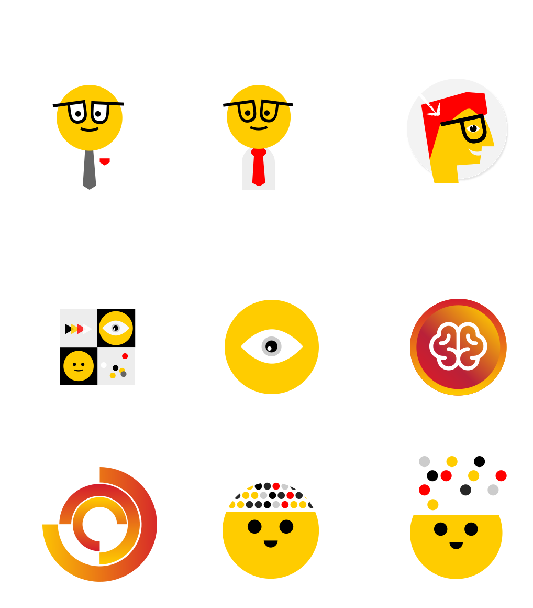
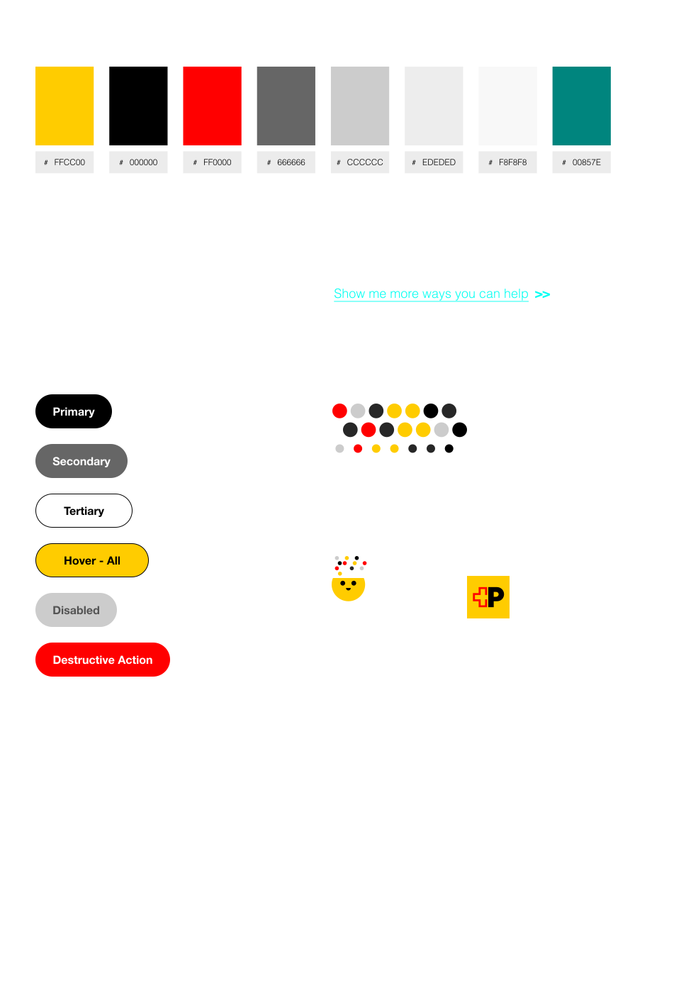
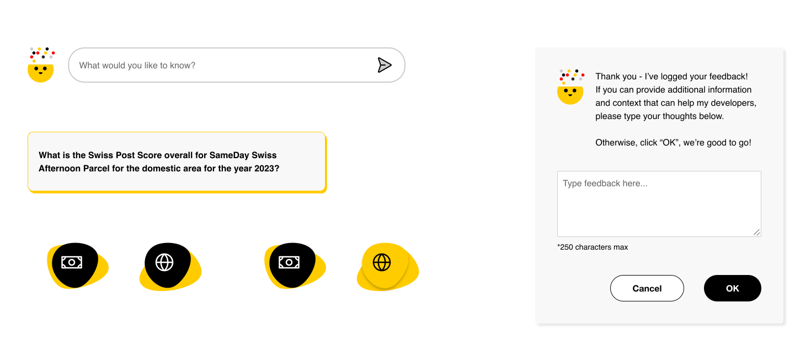
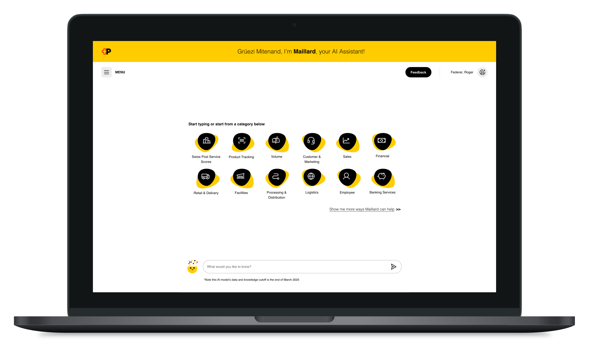
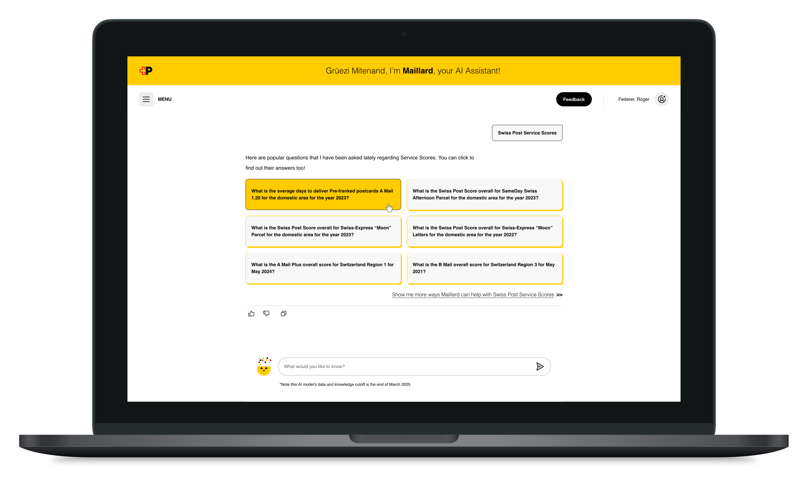
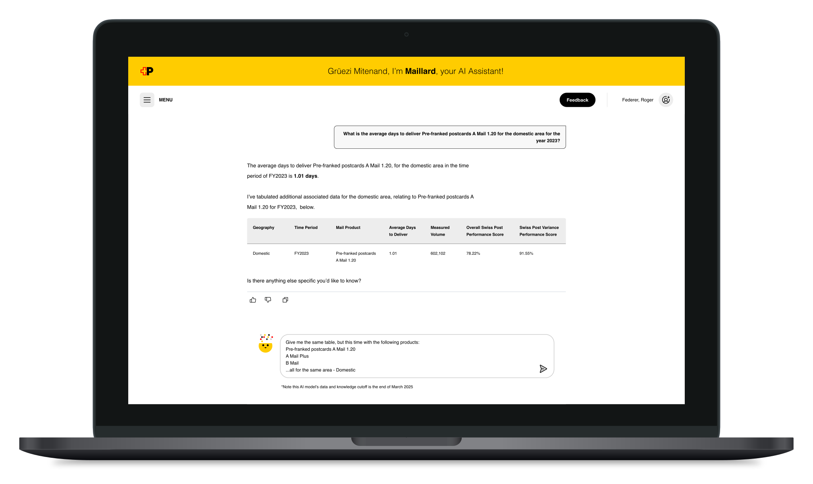
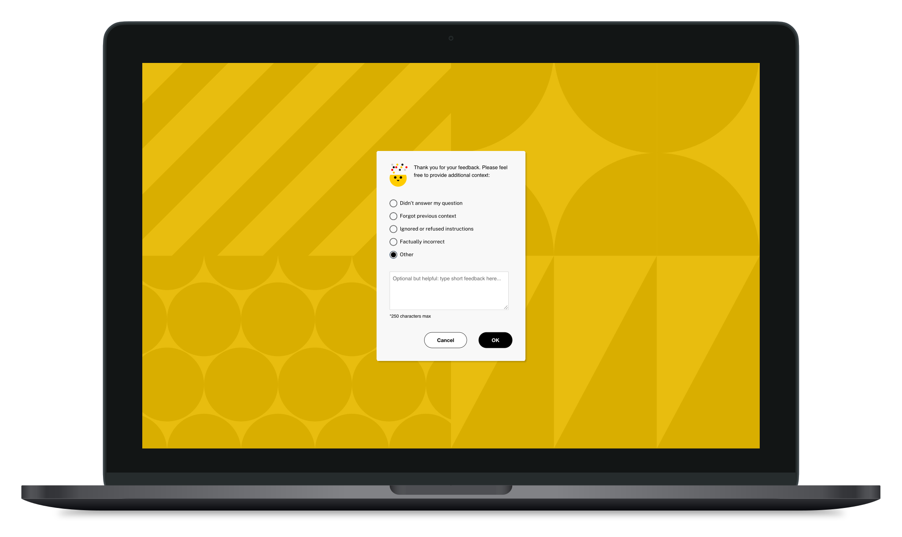

01Role
- Product Designer
- Visual Designer
- UX/UI Designer
- Illustrator
- Brand Designer
02The challenge
Could AI answer a decision-maker’s questions?
This project is a scrubbed case study derived from work I completed for one of the largest government‑run mail and logistics systems in the world. While the visual design, UX, and UI are entirely new, the journey and business value mirror the kinds of strategic questions that the LLM‑powered generative AI assistant can help answer.
Framing QuestionHow can Swiss Post decision‑makers leverage AI tools to quickly generate insights in performance, sales, marketing, and logistics—driving smarter business decisions?
To begin, I conducted comparative market research into Swiss Post’s brand identity, rooted in Helvetica and Swiss design principles, and explored how those traditions of clarity and precision could inform a modern AI interface.

03Persona
Warm, but still trustworthy
Drawing from brand research, I sketched concepts for the AI’s visual persona.
We set out to create an AI identity that feels warm and approachable while maintaining reliability and trust. Should the AI avatar lean anthropomorphic, suggesting friendliness? Or remain abstract, signaling neutrality and focus?
Guiding QuestionWhat visual symbol best represents a tool that engages naturally—free from the rigid, mechanical feel often associated with artificial intelligence?

04System
Start with the smallest pieces
The design team adopted an atomic design approach, starting with elemental UI units—buttons, inputs, icons—and progressively assembling them into larger “molecules,” then full interactive components.
This modular system ensured consistency and scalability across the product.

05Journeys
From atoms to journeys
With a solid atomic foundation, we combined UI atoms into molecules that support specific user journeys. Like an alphabet forming words and sentences, these molecules created a coherent, extensible GUI, providing clean UX/UI.

06Desktop
Ask, answer, correct course
We illustrated key scenarios of the AI tool in desktop view:
- Landing page introducing the AI assistant.
- Prompt‑response GUI offering multiple options based on user input.
- Complex query handling with tables, charts, and data manipulation.
- Feedback modal triggered by a thumbs‑down, allowing users to specify issues (e.g., “inaccurate answer,” “forgot context,” “factually wrong”).
For a detailed desktop view: Download PDF Deck




07Responsive
The same assistant on every screen
We extended the design system to tablet and mobile, ensuring the AI experience remained seamless across touchpoints.

08Next steps
What I’d test next
If deployed, the product lifecycle would include:
- Usability testing and analytics to identify pain points.
- Iterative improvements based on evidence‑driven design.
- Amplification of positive interactions uncovered in data.
Future ConsiderationsWhich digital touchpoint—mobile, tablet, laptop, desktop—dominates usage? Prioritize UX/UI optimization accordingly. Investigate low‑engagement touchpoints: are they contextual or design‑related? Refine usability to encourage adoption.
Proof of concept, not proof of value. This fictitious scenario is based on a real proof of concept. In practice, early design‑thinking research—interviews, pain point mapping, demand assessment to identify if this tool will truly solve existing user problems—would be essential before product design begins.